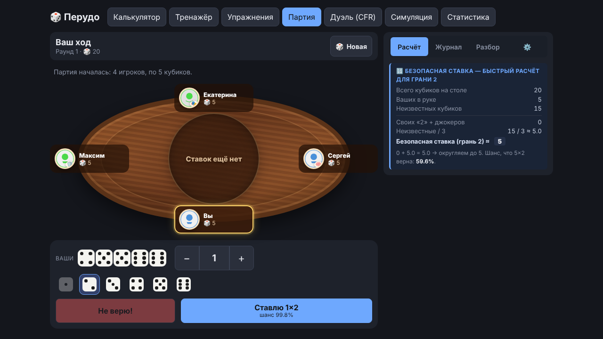
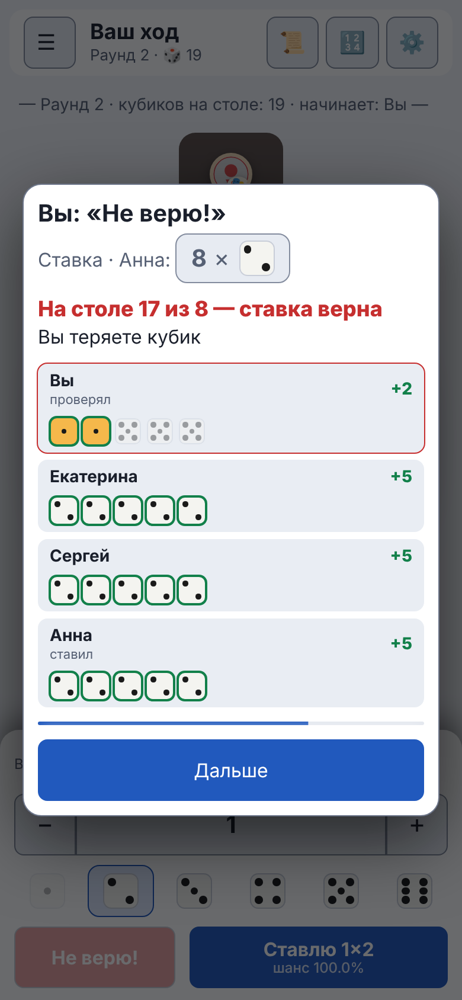
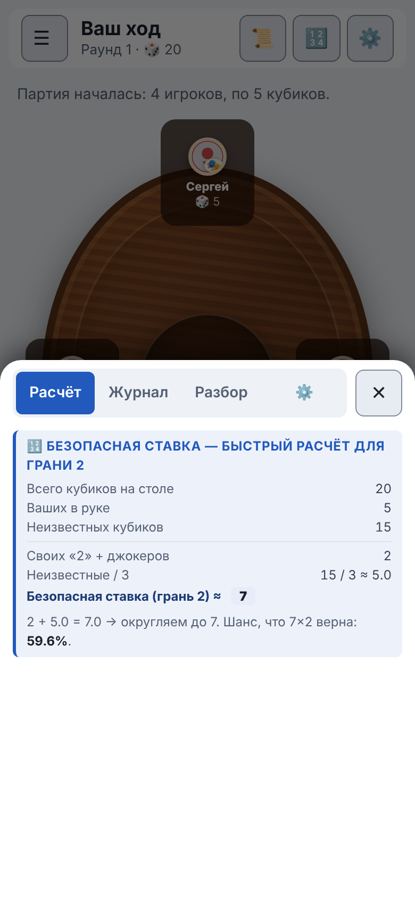

Руководство / Партия
Партия
Полноценная игра против 1–5 компьютерных игроков. Приложение показывает шансы, раскрывает кубики при проверке и потом разбирает ваши решения.
Как проходит ход
- Откройте вкладку «Партия» и нажмите «Начать партию». Настройки описаны на отдельной странице, для первого раза их можно не менять.
- На своём ходу выберите количество кубиков кнопками − и + и цифру, затем нажмите «Ставлю».
- Если считаете, что ставка соперника не сбудется, нажмите «Не верю!».
- Откроется окно, где видны кубики всех игроков и результат проверки. Нажмите «Дальше».
- В конце партии появится окно с победителем и кнопка «Сыграть ещё».

Вскрытие кубиков
После проверки открывается окно с кубиками всех игроков. Зелёной рамкой отмечены кубики, которые совпали со ставкой. Если окно мешает, в настройках можно снять галочку «Показывать вскрытие кубиков»: результат всё равно останется в журнале.

Журнал партии
На вкладке «Журнал» по порядку записаны раунды, ставки и проверки. После каждой проверки видно, кто проиграл, например «Дмитрий теряет кубик (осталось: 2)». Когда кубиков не осталось, появляется запись «Анна остаётся без кубиков и выбывает из игры». Результат Calza и полученный кубик тоже записываются.
На телефоне и на компьютере
- Компьютер: слева стол и ваша панель действий, справа вкладки «Расчёт», «Журнал», «Разбор» и «⚙️».
- Телефон: вся панель действий находится внизу экрана, под большим пальцем. Журнал, расчёт и настройки открываются снизу по значкам 📜 🔢 ⚙️ в верхней панели.
- Меню разделов на телефоне. Во время партии верхняя лента вкладок убирается, чтобы стол был больше. Кнопка ☰ в левом верхнем углу открывает список разделов.
- Телефон можно держать и горизонтально: стол будет слева, кнопки справа.


Если страница перезагрузилась посреди партии
Партия сохраняется в браузере после каждого хода, поэтому случайное обновление страницы или закрытая вкладка её не теряют. Когда вы снова откроете вкладку «Партия», вверху появится карточка «Незавершённая партия» с кратким описанием, например «Раунд 3 · у вас 4 кубика · ботов в игре: 2 из 3».
- «Продолжить партию» возвращает ту же партию: игроков и их кубики, ставки раунда, журнал, «Разбор» и записанные решения. Если сейчас очередь бота, он сходит сам.
- «Начать заново» стирает сохранённую партию, остаются обычные настройки.
Если на экране было окно вскрытия кубиков, оно не восстанавливается: партия продолжается со следующего раунда, а проверка остаётся в журнале. Закончившаяся партия не сохраняется. Сохранённая партия старше 7 суток не предлагается. Она хранится только на этом устройстве и не входит в экспорт и в копию на Яндекс Диске.